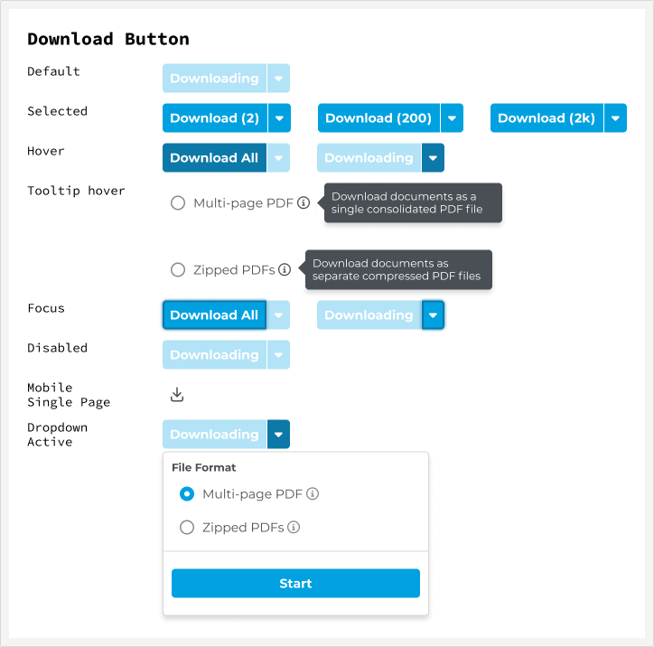
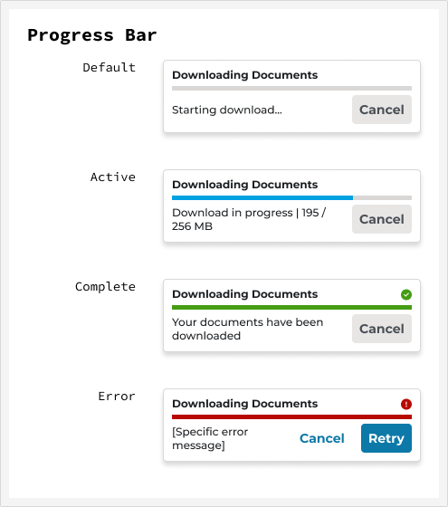
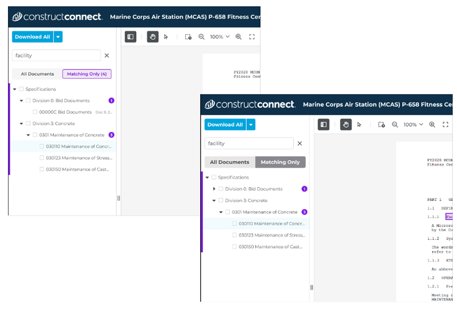

Business need
A credible document surface before Building Product Manufacturer accounts could migrate off the legacy platform onto Project Intelligence. A move to Elastic Search had also exposed use cases, like NOT/NEAR/AND operators, the old viewer couldn’t support.
User need
Qualify projects faster. Find one spec without downloading an entire CSI division, and annotate without leaving the app.
The existing viewer worked against that goal at nearly every step: large documents sometimes took minutes to load, scrolling and zooming were clunky, there was no multi-page PDF export, and the document tree only went two digits deep on CSI codes.
Users had built workarounds instead of reporting the problem as broken. Some downloaded from Project Intelligence and re-uploaded into Bluebeam just to annotate. Others downloaded to a phone, then uploaded to SharePoint, because the desktop viewer was too unreliable to trust. In VOC interviews, multiple users independently described the experience as chaotic and unorganized.
My UX partner led the interviews and journey mapping; I sat in on sessions and worked from the output. The most useful finding wasn’t anything users said directly. Nobody had filed the viewer as broken, and workarounds that elaborate tell you what a problem actually costs, because you can measure it in what people are willing to do to avoid it.
Journey mapping placed the viewer at the seam between qualification and estimation. That reframed the work from “make the viewer faster” to “stop breaking the handoff between two workflows.”
Four rounds of search-design iteration and two on the download experience, each round tested before the next began rather than batched into a single validation at the end. Search was a comprehension problem: could users tell which documents matched, and why? Download was a specification problem: once export moved beyond one file at a time, the button had to account for every condition it could be in.
-
Layout
InsightOf three layout directions tested, the tab layout won clearly.ActionCut before ship for build feasibility. The single-document view shipped instead; everything else that validated shipped intact. -
Keyword highlighting
InsightUsers had complained about yellow-on-white highlighting for years. It’s hard to see for anyone, and worse for people with color vision deficiencies.ActionTested several web-accessible combinations with typical and color-deficient vision. Purple won and shipped. Internal and external reaction exceeded expectations for what looked like a minor detail. -
Multi-document export
InsightSelecting 2 documents and selecting 2,000 needed the same control to behave sensibly, including format choice and progress.ActionSpecified default, hover, focus, disabled, dropdown-open and selected-with-count states, plus a progress component with cancel and retry instead of a dead end.

The download button, specified across every condition it can be in. Specifying all of it is less exploratory than search design, and it is exactly the detail that decides whether the build matches the spec.

Large document sets take real time to download, so progress needed its own states. The error state carries a retry rather than dead-ending the user.
The rebuilt viewer opens large construction document sets in under three seconds, searches inside them with real keyword operators, and exports any combination of pages without leaving the app. Search results can be filtered to matching documents only, with per-document match counts, so a user scanning a hundred-file project sees where the answer is instead of hunting for it.
The parts users noticed most weren’t the big ones. Purple highlighting instead of yellow. A document tree that goes deep enough to reach a single spec instead of an entire CSI division. Multi-page export where there had been none. Individually minor, collectively the difference between a tool people worked around and one they worked in.

Search within the viewer, toggling between all documents and matching-only results, with per-document match counts.
Released to Project Intelligence Pro users in November 2024. All three target metrics were hit.
Then, in July 2025, after eight months at full exposure, the viewer was rolled back, not for anything in the design, but for networking and security failures in the underlying infrastructure.
Shipping isn’t the finish line, and hitting your metrics doesn’t make the work permanent. A design can be validated, adopted, and still get pulled by a layer you don’t own.
I’m including it anyway. The eight months it was live are real, the metrics held, and the accessibility work in particular outlived the rollback. Portfolios that only show work still standing aren’t showing the job.
What worked: Early testing caught the highlight-color problem before ship, avoiding a repeat of years of user complaints about the old viewer.
What I’d do differently: Push harder for research-validated features to ship as designed, like the tab layout, or secure a committed fast-follow rather than an open-ended “later” that risks never happening.
What this unlocked: A credible surface for Building Product Manufacturer accounts, the foundation for the Ask Documents AI panel, and the migration effort off the legacy platform. Ask Documents later became the internal proof that conversational AI worked for this user base, the argument that made Search Assist fundable.